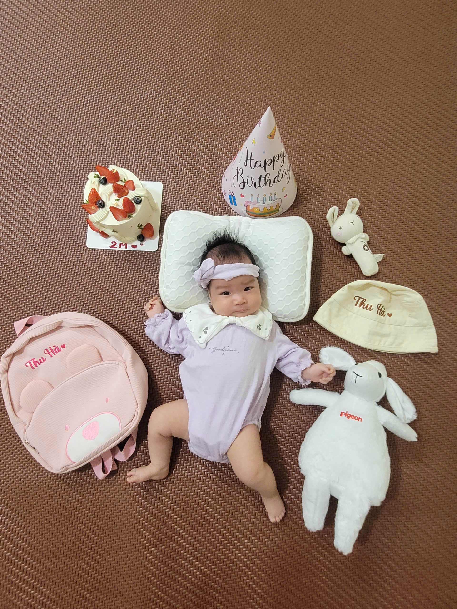

Khổng Văn Hải
"Toán học, Gia đình và những vần thơ ngẫu hứng."
"Toán học, Gia đình và những vần thơ ngẫu hứng."
Xin chào, tôi là Khổng Văn Hải. Hiện tại, tôi đang công tác với vai trò Giảng viên Toán tại Đại học Bách khoa Hà Nội (HUST) - một môi trường học thuật đầy năng động và nhiệt huyết.
Trước khi gắn bó với bục giảng tại quê nhà, tôi từng có khoảng thời gian thanh xuân tu nghiệp và nghiên cứu tại Université de Nantes, Pháp. Quãng thời gian tại đây không chỉ hun đúc cho tôi tình yêu sâu sắc với Toán học mà còn mang lại cho tôi những trải nghiệm văn hóa vô giá.
Đằng sau những con số và phương trình phức tạp, niềm tự hào và bến đỗ bình yên nhất của tôi chính là gia đình.
Tôi may mắn có sự đồng hành của người vợ hiền thảo, Giang, người luôn đứng sau ủng hộ mọi quyết định và chia sẻ cùng tôi những buồn vui trong cuộc sống. Và đặc biệt hơn cả, tháng 8 năm 2026, gia đình chúng tôi vỡ òa trong hạnh phúc khi đón chào sự ra đời của cô con gái nhỏ vô cùng đáng yêu: bé Mía.
"Mọi hành trình dài đều trở nên ý nghĩa hơn khi có người thương yêu đứng đợi ở nhà."

Nghiên cứu việc ứng dụng các mô hình toán học để mô phỏng và giải quyết các vấn đề phức tạp trong sinh học, từ sự phát triển của quần thể đến dịch tễ học. Một lĩnh vực đầy tính nhân văn và tính thực tiễn cao.
Khám phá vẻ đẹp của lý thuyết xác suất kết hợp với giải tích để mô tả các hiện tượng biến đổi theo thời gian chịu tác động của các yếu tố nhiễu loạn ngẫu nhiên trong tự nhiên và tài chính.
Không chỉ có logic và những con số khô khan, tâm hồn tôi luôn dành một góc nhỏ cho sự lãng mạn. Tôi thích làm thơ tặng vợ, viết về con gái nhỏ, và ghi lại những kỷ niệm đẹp trong các chuyến đi.
"Mây Sa Pa giăng đầy ô cửa sổ,
Tay nắm tay trong giá lạnh sương mù.
Nghe tiếng con cười tan đi bao vất vả,
Phương trình đời bỗng chốc hóa lời ru."
- Tặng Giang và Mía yêu -
Đặc biệt, chuyến đi Sa Pa đầy sương mây cùng gia đình là một trong những hồi ức tuyệt đẹp mà tôi luôn trân quý, nơi thiên nhiên hòa quyện với tình cảm gia đình ấm áp.